IMAGING CHAMBER
被重构的
身体
同一个身体在不同物理技术下显出不同层次。医学成像用物理过程重建身体的可见性，每种技术看见的都是截然不同的结构。
OBSERVATION GUIDE
- 选择成像模式：X 光 / MRI / PET
- X光：点击三个按钮切换层面与窗位
- MRI：拖动切片滑杆浏览脑部层面
- PET：脑部与全身视图对比代谢热区
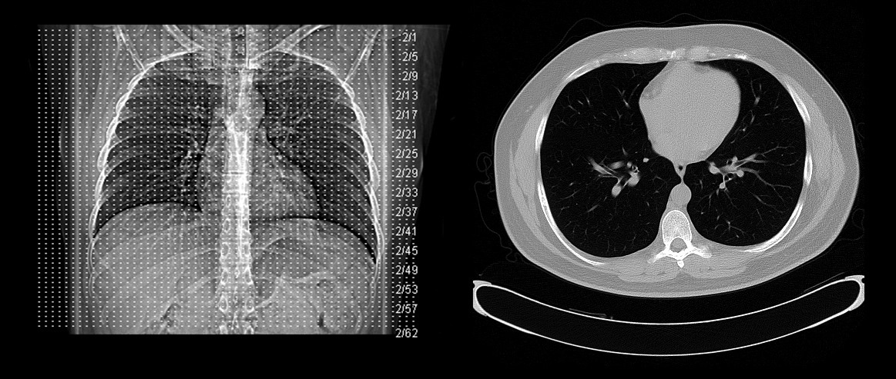
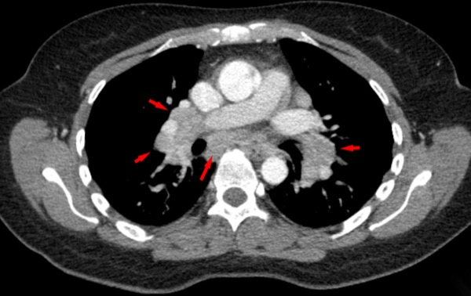
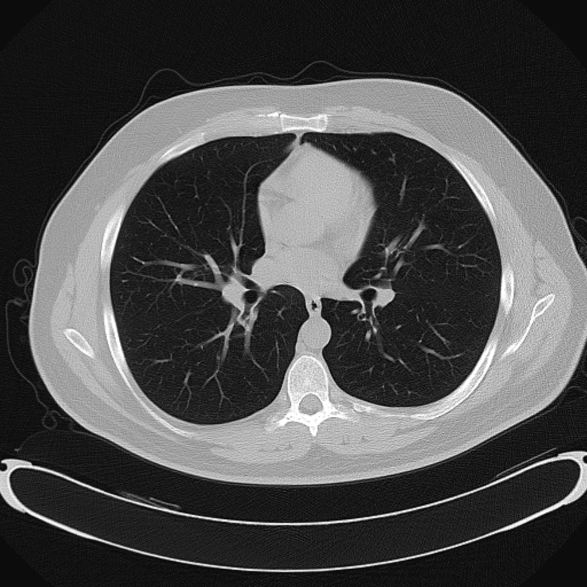
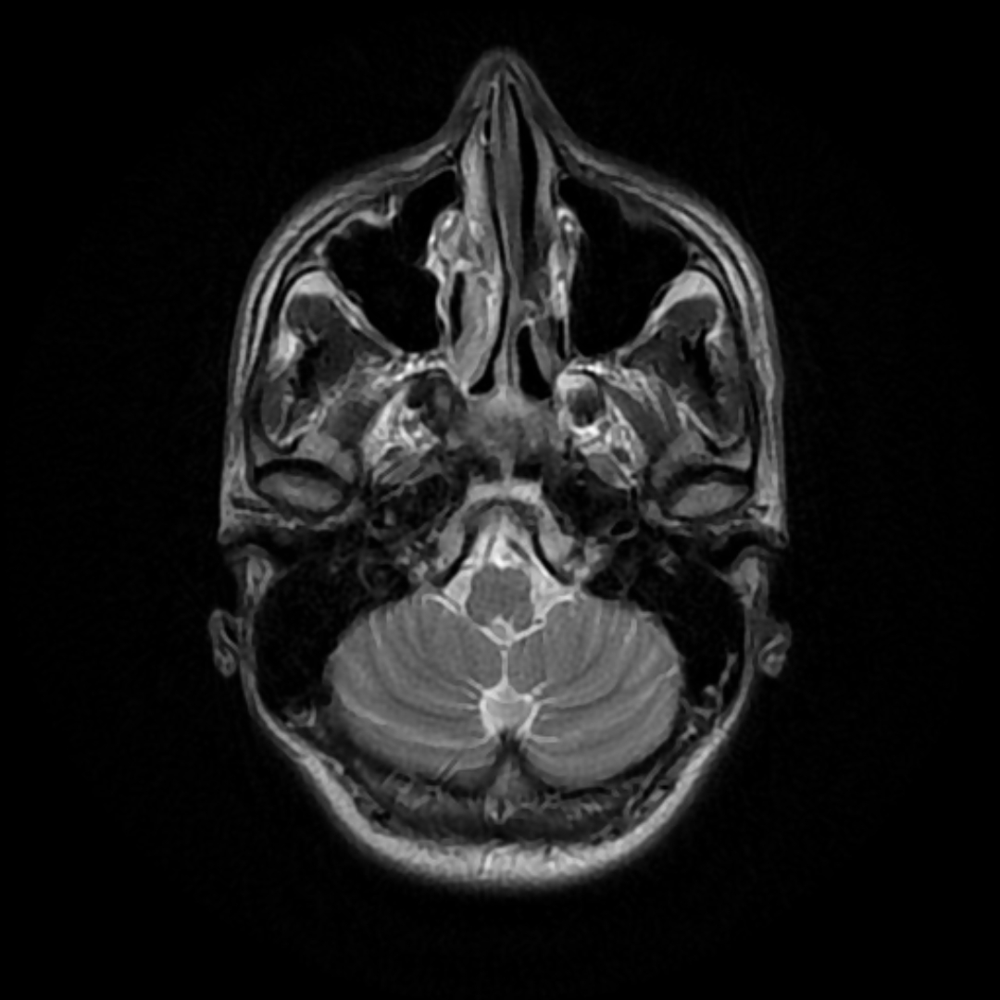
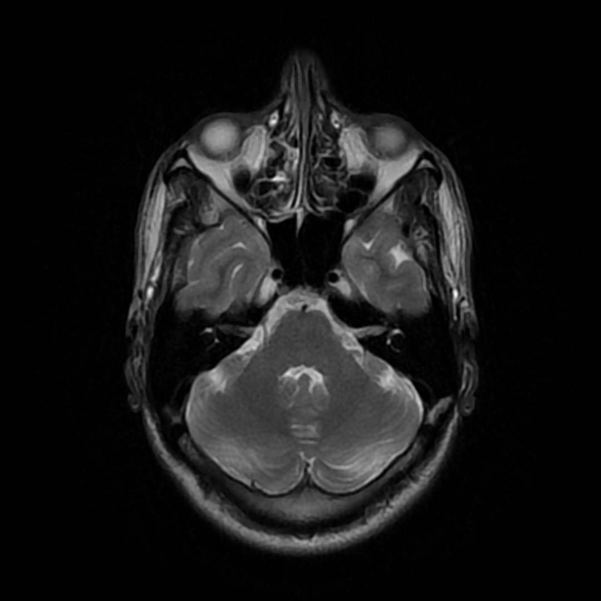
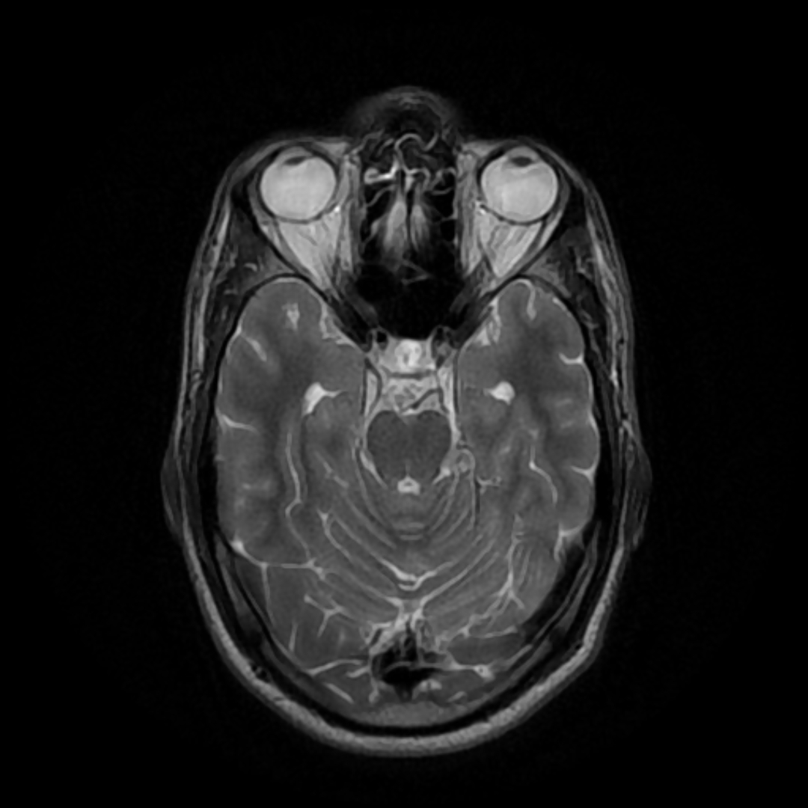
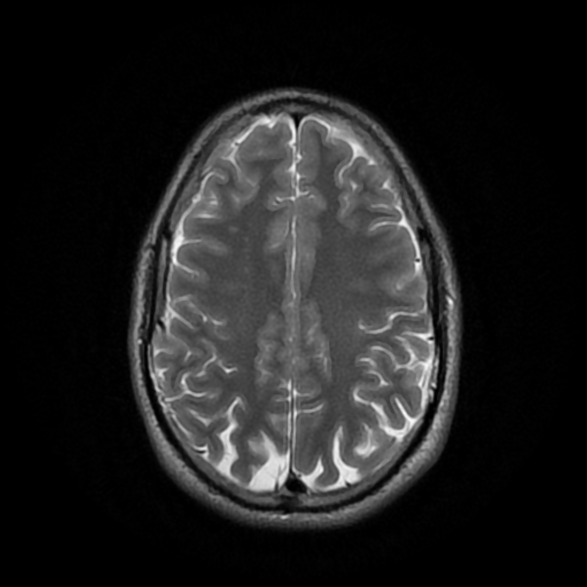
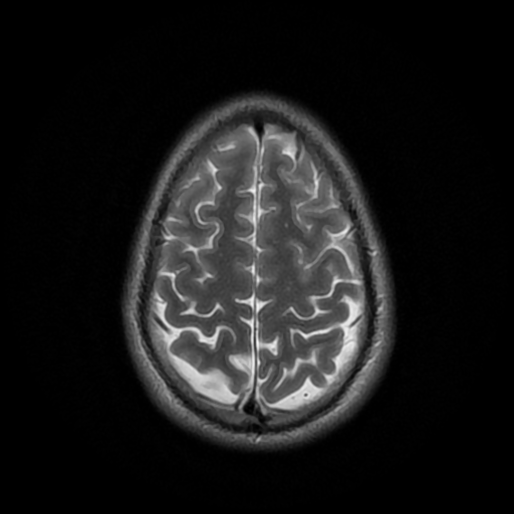
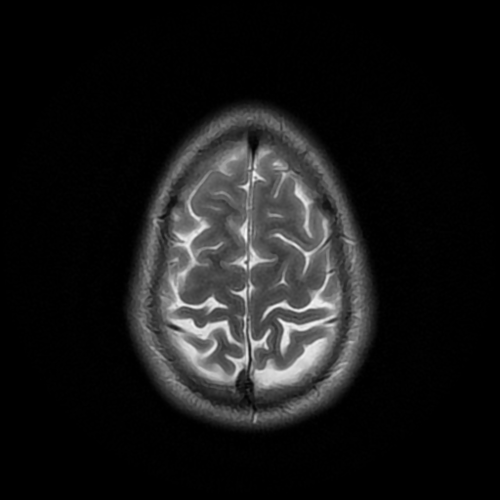
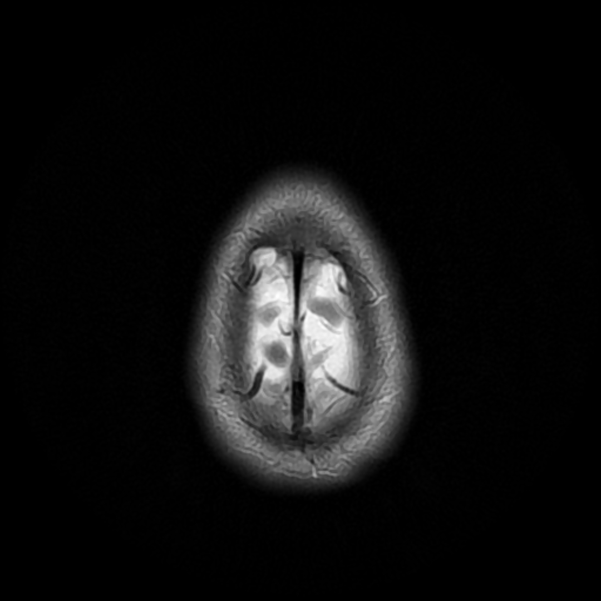
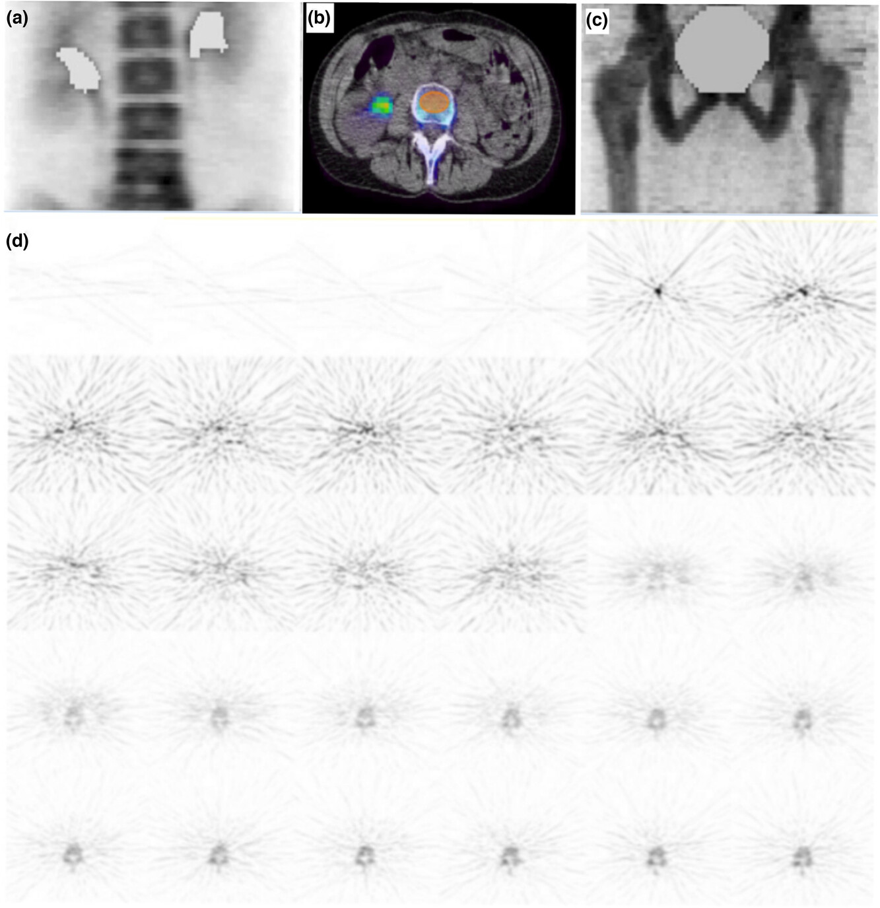
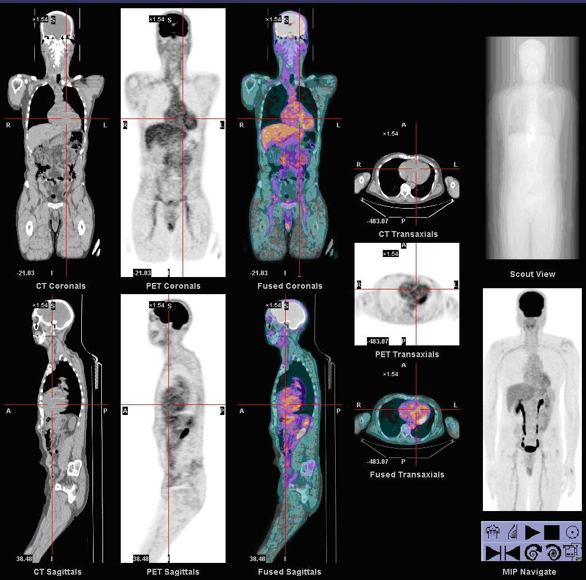
IMAGE · WIKIMEDIA COMMONS · EDUCATIONAL DISPLAYX-RAY · BONE WINDOW
X 光模式：X 射线穿透人体，高密度骨骼吸收最多，在胶片上留下白色影像。切换层面或窗位，观察同一套 CT 数据在不同窗口下呈现出的骨骼与肺组织。
物理原理：X 射线衰减 · 光电效应 · 康普顿散射 · 1895 伦琴发现